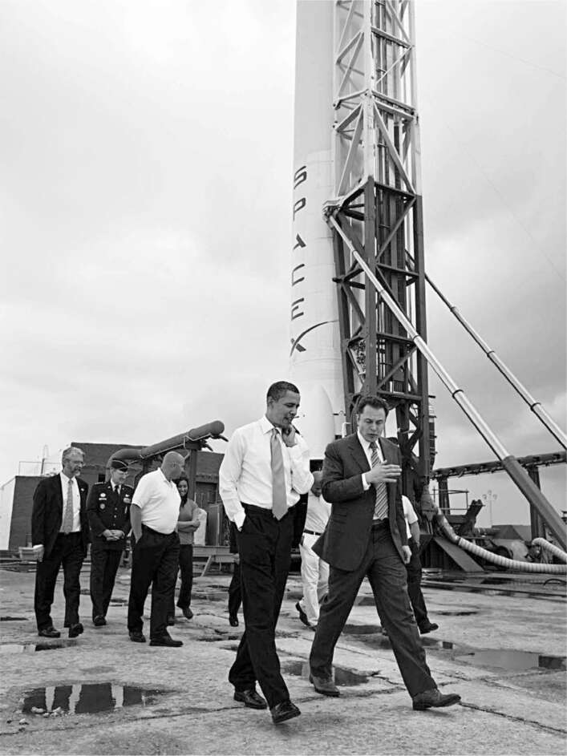

Falcon 9, Dragon và Bệ phóng 40
Khi SpaceX giành được hợp đồng của NASA để gửi hàng hóa lên Trạm Vũ trụ Quốc tế, nó đi kèm với một thách thức. Nó đòi hỏi một tên lửa mạnh hơn nhiều so với Falcon 1.
Ban đầu, Musk dự định tên lửa mới sẽ có năm động cơ thay vì một, và do đó được gọi là Falcon 5. Nó cũng cần một động cơ mạnh hơn. Nhưng Tom Mueller lo ngại rằng việc chế tạo động cơ mới sẽ mất quá nhiều thời gian, và ông đã thuyết phục Musk chấp nhận một ý tưởng được sửa đổi: một tên lửa với chín động cơ Merlin ban đầu. Như vậy, Falcon 9 đã ra đời, một tên lửa sau này trở thành trụ cột của SpaceX trong hơn một thập kỷ. Với chiều cao 48 mét, nó cao hơn gấp đôi Falcon 1, mạnh hơn gấp mười lần và nặng hơn gấp mười hai lần.
Ngoài tên lửa mới, họ cần một khoang tàu vũ trụ, module được phóng trên đỉnh tên lửa và mang tải trọng hàng hóa (hoặc phi hành gia) vào quỹ đạo, có thể kết nối với Trạm Vũ trụ và quay trở lại Trái đất. Musk đã làm việc với các kỹ sư của mình trong một loạt các cuộc họp sáng thứ Bảy để thiết kế một khoang từ đầu, mà ông đặt tên là Dragon, dựa theo tên con rồng Puff the Magic Dragon.
Và cuối cùng, họ cần một địa điểm - không phải Kwaj! - nơi họ có thể thường xuyên phóng tên lửa mới. Việc vận chuyển Falcon 9 khổng lồ qua nửa Thái Bình Dương là quá khó khăn. Thay vào đó, SpaceX đã đạt được thỏa thuận sử dụng một phần của Trung tâm Vũ trụ Kennedy tại Cape Canaveral, nơi có gần bảy trăm tòa nhà, bệ phóng và khu liên hợp phóng trải rộng trên 58.000 ha trên bờ biển Đại Tây Dương của Florida. SpaceX đã thuê Bệ phóng 40, nơi từ những năm 1960 đã được sử dụng cho các vụ phóng tên lửa Titan của Không quân.
Để xây dựng lại khu liên hợp, Musk đã thuê một kỹ sư tên là Brian Mosdell, người làm việc cho liên doanh Lockheed-Boeing, United Launch Alliance. Các cuộc phỏng vấn xin việc của Musk có thể gây khó chịu. Ông làm nhiều việc cùng lúc, nhìn chằm chằm vào khoảng không, và đôi khi im lặng trong một phút hoặc hơn. (Ứng viên được cảnh báo trước là cứ ngồi yên và đừng cố gắng lấp đầy sự im lặng.) Nhưng khi ông tập trung và thực sự muốn đánh giá một ứng viên, ông sẽ đi sâu vào các cuộc thảo luận kỹ thuật chi tiết. Lý do khoa học để sử dụng heli thay vì nitơ là gì? Phương pháp tốt nhất để làm kín trục bơm và thanh lọc mê cung là gì? "Tôi có một mạng lưới thần kinh tốt khi đánh giá khả năng làm việc của một người chỉ với một vài câu hỏi," Musk nói. Mosdell đã nhận được công việc.
Được Musk thường xuyên thúc giục, Mosdell đã xây dựng lại khu vực này theo cách tiết kiệm điển hình của SpaceX, theo đúng nghĩa đen. Ông và sếp của mình, Tim Buzza, đã tìm kiếm các linh kiện có thể được tái sử dụng với giá rẻ. Buzza đang lái xe trên đường tại Cape Canaveral và nhìn thấy một bể chứa oxy lỏng cũ. "Tôi hỏi vị tướng xem chúng tôi có thể mua nó không," ông nói, "và chúng tôi đã có một bình chịu áp suất trị giá 1,5 triệu đô la với giá phế liệu. Nó vẫn còn ở Bệ phóng 40."
Musk cũng tiết kiệm tiền bằng cách đặt câu hỏi về các yêu cầu. Khi ông hỏi nhóm của mình tại sao phải tốn 2 triệu đô la để xây dựng một cặp cần cẩu để nâng Falcon 9, ông đã được xem tất cả các quy định an toàn do Không quân đặt ra. Hầu hết đã lỗi thời, và Mosdell đã thuyết phục được quân đội sửa đổi chúng. Chi phí cho các cần cẩu cuối cùng chỉ còn 300.000 đô la.
Hàng thập kỷ với những hợp đồng chi phí cộng thêm đã khiến ngành hàng không vũ trụ trở nên ì ạch. Một van trong tên lửa có giá gấp ba mươi lần so với một van tương tự trong ô tô, vì vậy Musk liên tục thúc ép đội ngũ của mình tìm nguồn cung ứng linh kiện từ các công ty ngoài ngành hàng không vũ trụ. Chốt mà NASA sử dụng trong Trạm Vũ trụ Quốc tế có giá 1.500 đô la mỗi chiếc. Một kỹ sư của SpaceX đã có thể sửa đổi chốt dùng trong buồng vệ sinh và tạo ra một cơ chế khóa chỉ với 30 đô la. Khi một kỹ sư đến chỗ làm của Musk và nói với ông rằng hệ thống làm mát bằng không khí cho khoang tải trọng của Falcon 9 sẽ có giá hơn 3 triệu đô la, ông đã gọi sang Gwynne Shotwell ở phòng làm việc bên cạnh để hỏi giá của một hệ thống điều hòa không khí cho một ngôi nhà là bao nhiêu. Khoảng 6.000 đô la, cô ấy nói. Vì vậy, đội ngũ SpaceX đã mua một số thiết bị điều hòa không khí thương mại và sửa đổi máy bơm để chúng có thể hoạt động trên đỉnh tên lửa.
Khi Mosdell làm việc cho Lockheed và Boeing, ông đã xây dựng lại một tổ hợp bệ phóng tại Cape Canaveral cho tên lửa Delta IV. Tổ hợp tương tự mà ông xây dựng cho Falcon 9 chỉ tốn một phần mười chi phí. SpaceX không chỉ tư nhân hóa không gian; mà còn đang đảo lộn cấu trúc chi phí của nó.
"Tôi được khuyên nên kéo dài chương trình Tàu con thoi. Điều đó có đúng không?", Barack Obama hỏi Lori Garver, cố vấn chiến dịch của ông về các vấn đề không gian, vào đầu tháng 9 năm 2008.
"Không", cô trả lời. "Khu vực tư nhân nên làm việc này." Đó là một lời khuyên mạo hiểm. SpaceX đã ba lần thất bại trong việc phóng vệ tinh lên quỹ đạo và sắp thực hiện nỗ lực cuối cùng.
Garver, một cựu chiến binh của NASA, đang cố gắng thuyết phục ứng cử viên tổng thống của Đảng Dân chủ rằng cách tiếp cận của Mỹ đối với việc chế tạo tên lửa cần phải thay đổi. NASA đang lên kế hoạch ngừng chương trình Tàu con thoi và hy vọng sẽ thay thế nó bằng một chương trình tên lửa mới mà họ gọi là Constellation. Nó đang được điều hành theo cách truyền thống: NASA trao các hợp đồng chi phí cộng thêm cho Liên minh Phóng tên lửa Boeing-Lockheed để chế tạo hầu hết các bộ phận. Nhưng chi phí dự kiến của chương trình đã tăng hơn gấp đôi, và nó vẫn chưa hoàn thành. Garver đề xuất rằng Obama nên hủy bỏ nó và thay vào đó cho phép các công ty tư nhân, chẳng hạn như SpaceX, phát triển tên lửa có thể đưa các phi hành gia vào không gian.
Đó là lý do tại sao bà, giống như Musk, đã đặt rất nhiều kỳ vọng vào lần phóng thứ tư của Falcon 1 từ Kwajalein vào tháng 9 đó. Khi nó thành công, bà đã nhận được những cuộc gọi chúc mừng từ các nhân viên cấp cao của Obama, và cuối cùng Obama đã bổ nhiệm bà làm phó quản trị viên của NASA.
Thật không may cho Garver, Obama đã chọn Charlie Bolden, một cựu phi công Thủy quân lục chiến và phi hành gia NASA, làm sếp của bà, người không chia sẻ sự nhiệt tình của bà đối với việc hợp tác với khu vực thương mại. "Tôi không phải là một người theo chủ nghĩa lý tưởng như nhiều người xung quanh tôi, những người cảm thấy rằng tất cả những gì chúng ta cần làm là lấy ngân sách của NASA, lấy mọi thứ cho các chuyến bay vũ trụ có người lái và đưa nó cho Elon Musk và SpaceX", Bolden nói.
Garver cũng phải đấu tranh với những người trong Quốc hội có các cơ sở của Boeing ở tiểu bang của họ và, mặc dù là Đảng Cộng hòa, lại phản đối việc doanh nghiệp tư nhân tiếp quản những gì họ cảm thấy nên được điều hành bởi một cơ quan chính phủ. "Các quan chức cấp cao trong ngành và chính phủ đã lấy làm thích thú khi chế giễu SpaceX và Elon", Garver nói. "Việc Elon trẻ hơn và giàu hơn họ, với tư duy đột phá của Thung lũng Silicon và thiếu tôn trọng đối với ngành công nghiệp truyền thống, cũng chẳng giúp ích gì."
Cuối năm 2009, Garver đã thắng trong cuộc tranh luận. Tổng thống Obama hủy bỏ chương trình Constellation của NASA sau khi các cố vấn khoa học và giám đốc ngân sách cho rằng chương trình này "vượt ngân sách, chậm tiến độ, đi chệch hướng và không thể thực hiện được". Những người theo chủ nghĩa truyền thống của NASA, bao gồm cả phi hành gia đáng kính Neil Armstrong, đã lên án quyết định này. Thượng nghị sĩ Richard Shelby của Alabama phát biểu: "Ngân sách NASA do tổng thống đề xuất bắt đầu cuộc hành quân đến cái chết cho tương lai của các chuyến bay vũ trụ có người lái của Hoa Kỳ". Cựu quản trị viên NASA, Michael Griffin, người đã từng cùng Musk đến Nga bảy năm trước đó, cáo buộc: "Về cơ bản, Hoa Kỳ đã quyết định rằng họ sẽ không còn là một nhân tố quan trọng trong lĩnh vực bay vào vũ trụ có người lái". Họ đã sai. Trong thập kỷ tiếp theo, chủ yếu dựa vào SpaceX, Hoa Kỳ đã đưa nhiều phi hành gia, vệ tinh và hàng hóa lên vũ trụ hơn bất kỳ quốc gia nào khác.
Tháng 4 năm 2010, Obama quyết định đến Cape Canaveral để chứng minh rằng việc dựa vào các công ty tư nhân như SpaceX không có nghĩa là Hoa Kỳ từ bỏ việc khám phá không gian. "Một số người cho rằng việc hợp tác với khu vực tư nhân theo cách này là không khả thi hoặc không khôn ngoan", ông nói trong bài phát biểu của mình. "Tôi không đồng ý. Bằng cách mua dịch vụ vận chuyển không gian - thay vì mua chính các phương tiện - chúng ta có thể tiếp tục đảm bảo đáp ứng các tiêu chuẩn an toàn nghiêm ngặt. Nhưng chúng ta cũng sẽ đẩy nhanh tốc độ đổi mới khi các công ty - từ các công ty khởi nghiệp trẻ đến các công ty hàng đầu - cạnh tranh để thiết kế, chế tạo và phóng các phương tiện mới để đưa người và vật liệu ra khỏi bầu khí quyển của chúng ta."
Theo thông tin được đưa tin, nhóm của tổng thống đã quyết định rằng ông sẽ đến một trong những bệ phóng sau bài phát biểu và chụp ảnh trước một tên lửa. Kế hoạch ban đầu là tổng thống sẽ đến bệ phóng của United Launch Alliance, nhưng bệ phóng này đang chuẩn bị phóng một vệ tinh tình báo bí mật, vì vậy ý tưởng đó đã bị hủy bỏ. Lori Garver nói rằng đó không phải là câu chuyện thật: "Tất cả chúng tôi tại Nhà Trắng đều đồng ý rằng chúng tôi muốn đến bệ phóng của SpaceX."
Hình ảnh được truyền hình trực tiếp là vô giá đối với cả Obama và Musk: vị tổng thống trẻ tuổi, sinh ra vào năm mà John Kennedy cam kết Mỹ sẽ đưa con người lên mặt trăng, sánh bước cùng vị doanh nhân dám nghĩ dám làm, trò chuyện thân mật khi họ đi vòng quanh chiếc Falcon 9 sáng bóng. Musk thích Obama. "Tôi nghĩ ông ấy là một người ôn hòa nhưng cũng là người sẵn sàng thúc đẩy sự thay đổi", ông nói. Ông có ấn tượng rằng Obama đang cố gắng đánh giá mình. "Tôi nghĩ ông ấy muốn biết liệu tôi có đáng tin cậy hay hơi điên rồ."

Tại Cape Canaveral với Tổng thống Obama, 2010